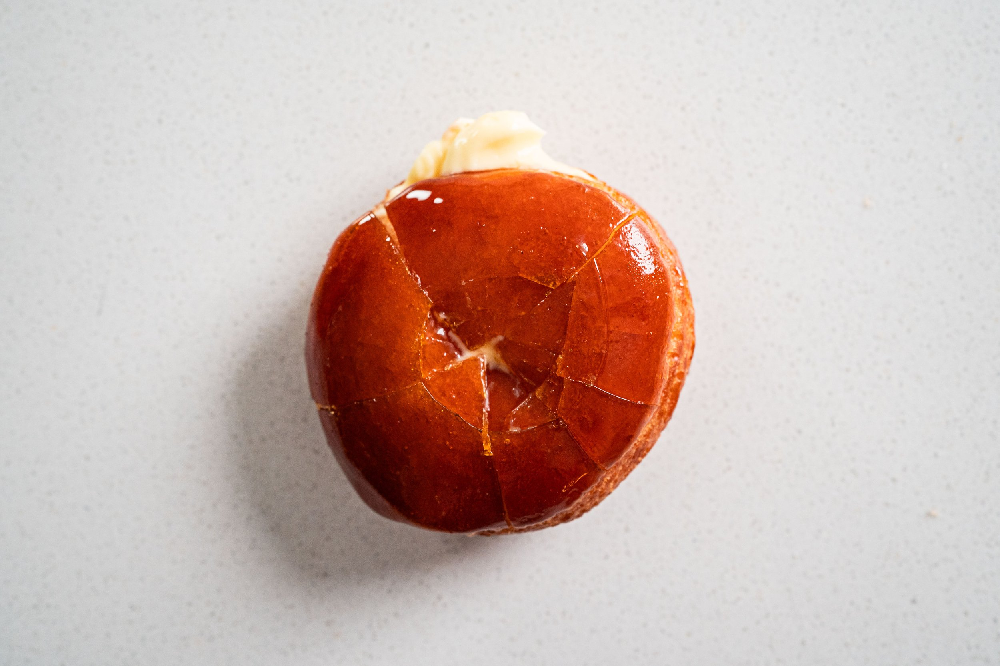

Creme Brulee Donuts Recipe

Description
Craving some sweets at the moment but want to try something new? Well today recipes is going to teach you how to make
one of the most delicious donuts you can possibily get your hands on and it not even impossible to make.
This recipe is going to teach you how to make Creme Brulee Donut which is a donut that is filled with custard
and harden on the outside with caramel, truly a sweet delicacy.
Ingredients
- Milk
- Yeast
- Sugar
- Yolks
- Vegetable oil
- Water
- Vanilla
- Butter
- Flour
- Salt
- Store Bought Custard
Steps
- Whisk the milk,yeast and 1 teaspoon of sugar together, after whisking let it rest for 20 mintues.
Once it foamy add the egg yolk and vanilla to the mixture.
- Use a danish dough whisk (if you do own one) or a dough hook for a whisking machine (if you own one, if not simply use any whisk) and
add the mixture to a bowl with flour,butter,salt and sugar to a bowl and mix. Afterward knead the dough for 10 minutes until it soft and elastic
- Place the dough in a greased mixin bowl and cover it, make sure to let it rest in a warm environment until it double in size
- press the risen dough down and place it on a floured surface, roll it until it about 1/2 thick
- Use a cookie cutter to cut the dough into round pieces, and knead the remaing dough into a ball and repeat this step until you used most of the dough
- Place the round dough into a lihgtly greased baking sheet, cover with a plastic wrap and let them rise for 30 minutes
- Heat the oil in a pot at 360F and cook for 1-2 minute until golden brown, afterward drain on a paper towel
- Fill the Brulee Donuts with your Custard
- add sugar and water to a saucepan and heat up over medium-high heat, once it start bubbling reduce the heat to medium
and swirl the pan occasionally until it golden, take the pan off the stove and continue swirling until the color deepen
- Dip the donut in the caramel
- Enjoy!
For more information check out this websites!
messinthekitchen.com
odin-recipes